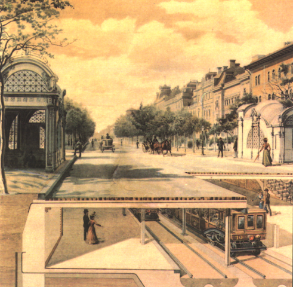
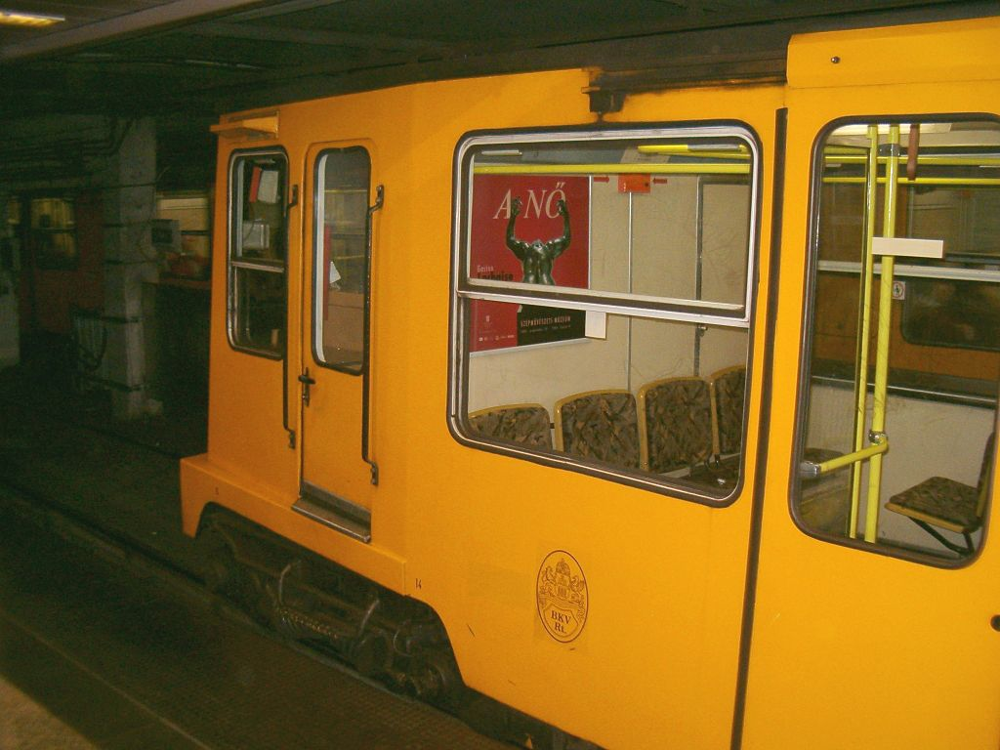

Az M1-es metróvonal
Az M1-es metróvonal (Millenniumi Földalatti Vasút vagy a köznyelvben Kisföldalatti) Budapest első metróvonala, amely a Vörösmarty tér és a Mexikói út állomások között közlekedik. 1896-os megnyitásával ez volt az európai kontinens első földalatti vasútvonala. A millenniumi földalatti az Andrássy úttal együtt 2002-ben a világörökség része lett.
Története
A Terézváros fő útvonalát, a Sugárutat 1884-re faburkolattal látták el. A Városliget felé rendszeres omnibusz járt, de az akkori ütőéren, a Király utcán közlekedő villamossal együtt is kevésnek bizonyult, a járatok túlzsúfoltak voltak. Tekintettel a közelgő millenniumi kiállításra is – melyet a Városligetbe terveztek – a sugárúti közúti vasútra egyre égetőbb szükség volt.
A Budapesti Villamos Városi Vasút (BVVV) vezérigazgatója Balázs Mór londoni tapasztalatai alapján foglalkozott egy pesti, felszín alatti vasút gondolatával. Legnagyobb riválisával, a Budapesti Közúti Vaspálya Társasággal (BKVT) együtt pályáztak az Andrássy (Sugár) úton építendő felszíni vasútra, melyet a hatóságok – a korábbi véleményüknek megfelelően – elutasítottak: „az Andrássy úton nem építhető közúti vasút”. A két cég azonban előzőleg megállapodást kötött: amennyiben a felszíni terveket elutasítják (melyre joggal számíthattak), földalatti vasút építését kezdeményezik. A terveket a Siemens és Halske cég készítette. A fennmaradt látványtervek szerint a városligeti fürdőtől a Vigadóig egyajtós, de háromosztagú szerelvények közlekedtek volna; a középső utastér bal oldalán külön fülkét szántak a dohányos uraknak, jobb oldalán pedig a hölgyeknek. Az ajtók önműködően, a vezető által irányítva nyíltak-zártak volna, és automatákból árusították volna a jegyeket.
Az engedélyt megkapták, sőt 90 éves engedélyidőt, 15 éves adókedvezményt és 5 évre menetjegyek utáni illetékbélyeg-átalányt kaptak. Cserébe viszont az Ezredévi Kiállítás megnyitásáig el kellett készülnie a vasútnak. Az engedély megadásától 21 hónap volt hátra a kiállítás megnyitójáig.
A földalatti vasútépítés gondolata és megvalósítása egyidős a londoni földalatti vasútvonal születésével. 1860-ban kezdtek hozzá az építéséhez és 1863-ban helyezték üzembe az első földalatti vasutat, azonban ez még gőzvontatású volt. A budapesti Millenniumi Földalatti Vasút a világ első villamos hajtású, egyben a kontinens első földalatti vasútjaként 1896. május 2-án került a nagyközönség használatába, és nagyobb fennakadások nélkül szolgál ma is. 1973-ig a vonal hossza 3700 méter volt, 9 földalatti és 2 felszíni megállóval. A szerelvények 2 perces időközzel közlekedtek, a legnagyobb mért napi utasszám 34 526 fő volt. A II. világháború végéig a további fejlődés nem folytatódott. Az akkori szokások szerint a földalatti vasút bal oldali közlekedésű volt, az áttérés a forgalomirányító és biztonsági rendszerek átépítése nélkül lehetetlen volt. Erre a millenniumi földalatti korszerűsítésekor került sor.
A Kisföldalatti járművei
A járműpark a vonal elindításakor 10 faburkolatú, barna és 10 sárgára festett acélburkolatú motorkocsiból állt, melyeket a Schlick gyár készített, és alig hasonlítottak az eredeti terveken szereplő szerelvényekre. A két üzemeltető cég, a Budapesti Villamos Városi Vasút (BVVV) kocsijai a sárga színt, a Budapesti Közúti Vaspálya Társaságé (BKVT) pedig a barna színt viselték. Királyi luxuskocsit is rendeltek, a 20-as pályaszámú kocsi előkelően díszítve – és kicsit eltérő konstrukcióval – várta a királyi utasokat. 1924–1930 között felújították a motorkocsikat: az eredetileg szimpla tolóajtókat duplára cserélték, egységes, új konstrukciójú forgóvázat építettek, valamint nagyobb teljesítményűre (TR 4,5-ös típus) cserélték a motorokat is. A motorkocsik 1960-tól pótkocsikkal kiegészítve közlekedtek. A pótkocsik a kelenföldi Füzesi Árpád Főműhelyben készültek. Az egy pótkocsiból és egy motorkocsiból álló szerelvény csatlása csak műhelyben volt bontható. Az 1972–73-as felújítás keretében új járműveket szereztek be. A 23 darab háromrészes csuklós járművet a Ganz–MÁVAG és Ganz Villamossági Művek gyártotta. Alapvetően ezek a járművek láthatóak ma is a Földalatti vonalán. A felújítás azonban a nyomvonalváltozás által nem érintett szakaszokon nem történt meg, így a járművek elhasználódása gyorsabb volt a vártnál. A járműveket a vandálok növekvő aktivitása is rombolta.
A jövő
A járműpark a vonal elindításakor 10 faburkolatú, barna és 10 sárgára festett acélburkolatú motorkocsiból állt, melyeket a Schlick gyár készített, és alig hasonlítottak az eredeti terveken szereplő szerelvényekre. A két üzemeltető cég, a Budapesti Villamos Városi Vasút (BVVV) kocsijai a sárga színt, a Budapesti Közúti Vaspálya Társaságé (BKVT) pedig a barna színt viselték. Királyi luxuskocsit is rendeltek, a 20-as pályaszámú kocsi előkelően díszítve – és kicsit eltérő konstrukcióval – várta a királyi utasokat. 1924–1930 között felújították a motorkocsikat: az eredetileg szimpla tolóajtókat duplára cserélték, egységes, új konstrukciójú forgóvázat építettek, valamint nagyobb teljesítményűre (TR 4,5-ös típus) cserélték a motorokat is. A motorkocsik 1960-tól pótkocsikkal kiegészítve közlekedtek. A pótkocsik a kelenföldi Füzesi Árpád Főműhelyben készültek. Az egy pótkocsiból és egy motorkocsiból álló szerelvény csatlása csak műhelyben volt bontható. Az 1972–73-as felújítás keretében új járműveket szereztek be. A 23 darab háromrészes csuklós járművet a Ganz–MÁVAG és Ganz Villamossági Művek gyártotta. Alapvetően ezek a járművek láthatóak ma is a Földalatti vonalán. A felújítás azonban a nyomvonalváltozás által nem érintett szakaszokon nem történt meg, így a járművek elhasználódása gyorsabb volt a vártnál. A járműveket a vandálok növekvő aktivitása is rombolta.